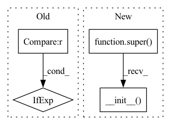

Pattern ID :39844
Before Change
):
self.log_dir = log_dir
// self.config = config // move config to opt (namespace)
self.opt = opt if opt is not None else None
self.use_wandb = (wandb is not None) and os.environ.get(
"WANDB_API_KEY", None
) is not NoneAfter Change
def __init__(self, log_dir: str = None):
super().__init__()
self.log_dir = log_dir
self.logger = None
self.use_wandb = (wandb is not None) and os.environ.get("WANDB_API_KEY", None) is not None
self.log_prefix = "Weights & Biases: " if self.use_wandb else "Tensorboard: "In pattern: SUPERPATTERN
Frequency: 5
Non-data size: 4
Instances Fragment ID: 113361943
Project Name: uetailab/uetai
Commit Name: 5c5dca9f031e4eb11f120c3d6b1ee3f56c945817
Time: 2021-08-19
Author: phi.nguyen.uet@gmail.com
File Name: src/uetai/logger/summary_writer.py
M Class Name: SummaryWriter
N Class Name: SummaryWriter
M Method Name: __init__(2)
N Method Name: __init__(3)
M Parent Class: LightningLoggerBase
N Parent Class:
M File Name: src/uetai/logger/summary_writer.py
N File Name: src/uetai/logger/summary_writer.py
M Start Line: 68
M End Line: 73
N Start Line: 71
N End Line: 73
Before Change
)
self.period = period
self.process_group = (
process_group if process_group is not None else dist.group.WORLD
)
self.step = 0
After Change
warmup_steps=0,
process_group=None,
):
super().__init__( params, process_group)
if warmup_steps < 0:
raise ValueError("Arg ``warmup_steps`` must be a non-negative number.")
self.warmup_steps = warmup_steps
if period < 1: Fragment ID: 113361945
Project Name: pytorch/pytorch
Commit Name: 2581dfc2492574963f3b4206512e14a68b359eca
Time: 2021-07-28
Author: wayi@fb.com
File Name: torch/distributed/algorithms/model_averaging/averagers.py
M Class Name: PeriodicModelAverager
N Class Name: PeriodicModelAverager
M Method Name: __init__(5)
N Method Name: __init__(5)
M Parent Class: ModelAverager
N Parent Class:
M File Name: torch/distributed/algorithms/model_averaging/averagers.py
N File Name: torch/distributed/algorithms/model_averaging/averagers.py
M Start Line: 70
M End Line: 87
N Start Line: 94
N End Line: 94
Before Change
def __init__(self, name: str, module_options: Optional[Dict] = None):
self.name = name
self.module_options = module_options if module_options is not None else {}
def __call__(self, *args, **kwargs) -> Result:
return NestedResult(task=self, key=self.name, value=self.do_call(*args, **kwargs))After Change
labels: Dataset,
metrics: List[Tuple[str, Callable]],
tracer_callable: Optional[Callable] = None):
super().__init__( name)
self._activation = activation
self._decoder = decoder
self._loss = loss
self._module = module Fragment ID: 113361944
Project Name: hristo-vrigazov/dnn.cool
Commit Name: d26505535a9bbcaf1bb4241fdaee6525ee92e76d
Time: 2020-07-03
Author: hvrigazov@gmail.com
File Name: dnn_cool/task_flow.py
M Class Name: Task
N Class Name: Task
M Method Name: __init__(10)
N Method Name: __init__(3)
M Parent Class: ITask
N Parent Class:
M File Name: dnn_cool/task_flow.py
N File Name: dnn_cool/task_flow.py
M Start Line: 101
M End Line: 103
N Start Line: 147
N End Line: 165
Before Change
// build first step conv 1x1.
self.conv_list.append(ConvBNReLU(in_channels, out_channels // 2, kernel_size=1, bias=False))
// avg pool in skip if stride = 2.
self.skip_step1 = nn.AvgPool2d(kernel_size=3, stride=2, padding=1) if stride == 2 else nn.Identity()
in_channels = out_channels // 2
mid_channels = in_channelsAfter Change
:param stdc_downsample_mode: downsample mode in stdc block, supported `avg_pool` for average-pooling and
`dw_conv` for depthwise-convolution.
super().__init__()
assert steps in [2, 3, 4], f"only 2, 3, 4 steps number are supported, found: {steps}"
self.stride = stride
self.conv_list = nn.ModuleList()
// build first step conv 1x1. Fragment ID: 113361947
Project Name: deci-ai/super-gradients
Commit Name: 98083d4303f887cb29f39029871612fe5e2e4753
Time: 2022-11-02
Author: 88616312+lkdci@users.noreply.github.com
File Name: src/super_gradients/training/models/segmentation_models/stdc.py
M Class Name: STDCBlock
N Class Name: STDCBlock
M Method Name: __init__(6)
N Method Name: __init__(5)
M Parent Class: nn.Module
N Parent Class: nn.Module
M File Name: src/super_gradients/training/models/segmentation_models/stdc.py
N File Name: src/super_gradients/training/models/segmentation_models/stdc.py
M Start Line: 34
M End Line: 43
N Start Line: 29
N End Line: 53
Before Change
d_inner = map_to_list(kwargs["d_inner"], kwargs["n_layer"])
n_head = map_to_list(kwargs["n_head"], kwargs["n_layer"])
d_head = [kwargs["d_model"] // n_h for n_h in kwargs["n_head"]] if kwargs["d_head"] is None else map_to_list(kwargs["d_head"], kwargs["n_layer"])
assert len(d_inner) == kwargs["n_layer"] and len(n_head) == kwargs["n_layer"] and len(d_head) == kwargs["n_layer"]
After Change
def __init__(self, **kwargs) -> None:
super().__init__()
self.config = HfTransfoXLConfig(**kwargs)
self.model = TransfoXLLMHeadModel(self.config)
Fragment ID: 113361946
Project Name: microsoft/archai
Commit Name: 42b15a75f9399c07c358acc3277db920dfb95b31
Time: 2022-12-16
Author: gth.rosa@uol.com.br
File Name: archai/nlp/models/hf_transfo_xl/model_hf_transfo_xl.py
M Class Name: HfTransfoXL
N Class Name: HfTransfoXL
M Method Name: __init__(1)
N Method Name: __init__(1)
M Parent Class: ArchaiModel
N Parent Class: ArchaiModel
M File Name: archai/nlp/models/hf_transfo_xl/model_hf_transfo_xl.py
N File Name: archai/nlp/models/hf_transfo_xl/model_hf_transfo_xl.py
M Start Line: 51
M End Line: 68
N Start Line: 22
N End Line: 27